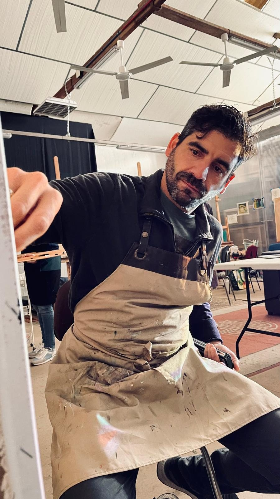

tulio
di lorenzo
Expresionismo figurativo. Materia, gran formato y honestidad.
Buenos Aires, 1973 · Taller en Málaga, España
ver la obraobra
toca una pintura para verla en grande
-
El viajeÓleo sobre lienzo · 81 × 65 cm
-
BellinaÓleo sobre papel · 40 × 35 cm
-
SublimeMixta: acrílico y óleo · 41 × 33 cm
-
Pop 80’Mixta: gesso, acrílico y óleo · 115 × 90 cm
-
ObsesiónMixta: acrílico y óleo · 115 × 90 cm
-
DolorMixta: acrílico y óleo · 120 × 120 cm
-
Équinoxe 5Mixta: acrílico y óleo · 81 × 65 cm
-
Todo un paloMixta: acrílico y óleo · 100 × 81 cm
-
DeseandoMixta: óleo y aerógrafo · 81 × 54 cm
-
The Vincent LandMixta: acrílico, óleo y gesso granulado · 100 × 81 cm
-
The butcherÓleo sobre lienzo · 43 × 43 cm
-
Apasionado dolorMixta: acrílico, óleo y collage · 120 × 120 cm
-
2024Mixta: acrílico, óleo y spray · 92 × 73 cm
-
Sobre el fuegoÓleo sobre lienzo · 92 × 73 cm

sobre mí
Nací en Buenos Aires en 1973. Soy hijo de inmigrantes italianos que llegaron a Argentina en la posguerra de 1950, un origen que marcó mi identidad a fuego, bajo los valores del esfuerzo, el legado y la resiliencia.
Desde hace diez años, mi hogar y mi taller están en Málaga, España, el lugar donde he terminado de consolidar mi lenguaje pictórico actual.
El arte como destino inevitable
Mi vínculo con el arte no nació de las aulas académicas convencionales, sino de una inmersión profunda y vital en el ecosistema creativo. Durante muchos años ejercí como mecenas de un renombrado artista plástico en Argentina. Vivir el taller desde dentro, comprender la psicología del color en el día a día y rodearme de creadores de primer nivel fue mi verdadera escuela. Esta experiencia, unida a una curiosidad insaciable que me llevó a recorrer museos por todo el mundo, educó mi mirada y alimentó una motivación creativa que permaneció latente durante mucho tiempo.
El despertar en el lienzo
Fue el aislamiento de la pandemia el catalizador que liberó todo ese arte que tenía oculto. Lo que empezó en las telas como una necesidad de escape se transformó en una vocación absoluta. Llevo seis años pintando de forma ininterrumpida y, en este camino, he buscado perfeccionar mi técnica formándome en España al lado de grandes referentes de la pintura contemporánea:
- Alejandro Carpintero
- Manuel Luna
- Manuel Castillero
- Miguel Linares Ríos
- Santiago Pina
- Jaime Valero
- Natalia Segovia
Valentía, materia y sentimiento
Me considero un artista expresionista figurativo. Me apasiona la materia, la densidad de la textura y el desafío físico que imponen los lienzos de gran formato. Mi pintura no busca la complacencia, sino la honestidad más brutal.
A la hora de expresar, soy un lanzado. En mi proceso creativo no existen los miedos, las trabas ni los prejuicios; mis manos van exactamente hacia donde empujan mis sentimientos.
No especulo frente a la tela: me entrego a ella con la seguridad de quien entiende que el arte es, ante todo, un acto de libertad absoluta y una descarga de energía vital.
contacto
Para consultas sobre obra, encargos o exposiciones, escríbeme por Instagram.
@artetulio